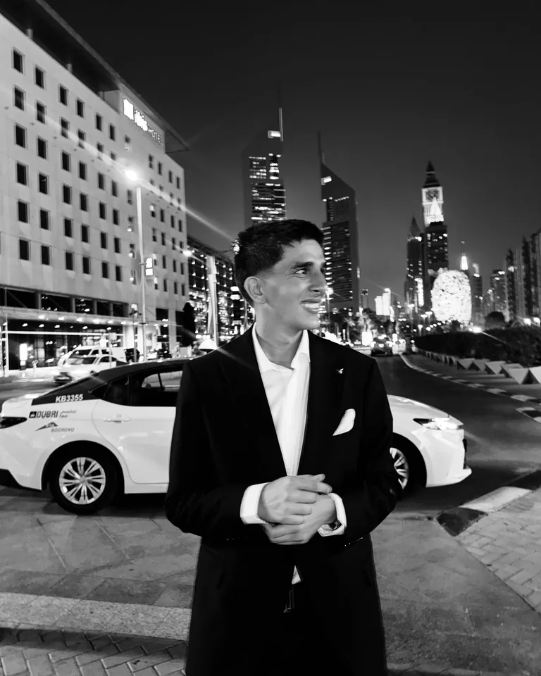

Product & UX
Research, user flows, information architecture, interaction design, and testable product decisions.
I turn user and business needs into clear digital experiences, and bring the technical grounding to shape practical interfaces with engineering.

Research, user flows, information architecture, interaction design, and testable product decisions.
Responsive, accessible interfaces and reusable visual systems shaped around implementation constraints.
Making data, network operations, and emerging interfaces understandable without hiding their complexity.
I work between user needs, business goals, and the technical details required to ship a reliable experience.

For a role or a project, send me a note with what you’re working on.